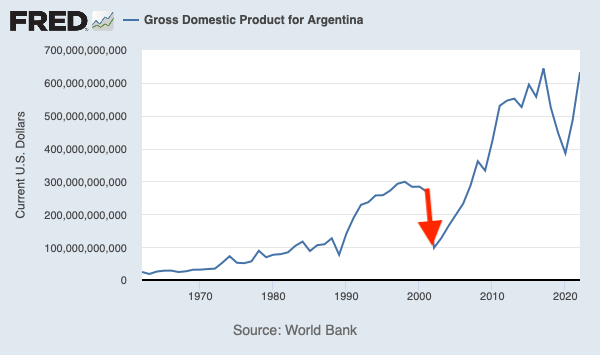
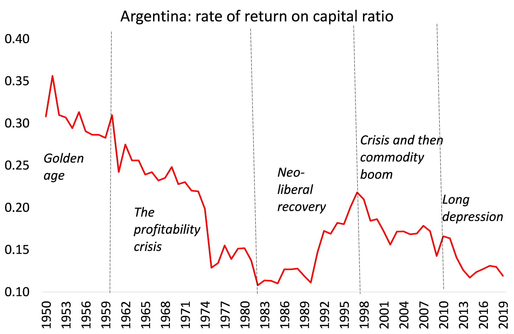

11 Argentina
Ehnts
Last time Argentina 🇦🇷 experimented with a $-backed currency, it crashed the economy. Unemployment and poverty skyrocketed. A Job Guarantee Program was created to alleviate these social ills and it did.

Argentina traditionally has a lot of inflation, so it’s a good place to look for evidence; this is also probably why it produces so many great macroeconomists.

Roberts
Dollarisation would also mean immediate recession and slump. It would have to start with a massive devaluation of the domestic peso monetary base. In a very optimistic scenario, if Argentina received a loan of say $12 billion from the IMF and used $5 billion as a reserve for the banking system and $7 billion to dollarise the monetary base, the domestic peso monetary base would still have to be reduced by nearly 400%. Argentine salaries (then in US dollars) would become among the lowest globally and poverty would rise to unprecedented levels. And Argentina is already in a recession with real GDP expected to drop by around 2% this year. So either way: peso or dollar, Argentine households would pay the price in living standards.
Dollarisation means that economic policy would be in the hands of US Federal Reserve and dollar foreign investors. National monetary policies would be basically abandoned. Countries issuing their own currency can allow it to depreciate to improve exports and domestic production at least in the short term. But a dollarised economy must go down with any global recession. A strong US dollar also means high export prices for a dollarised Argentina, making it more uncompetitive in world markets – unless labour costs are reduced by wage cuts or by faster productivity growth that keeps unit labour costs low.
Why has Argentina got into an inflationary spiral for decades interspersed with debt crises and slumps? Part of the answer is that Argentina never industrialised like East Asia, or even Brazil. The Peronist governments failed to get Argentine capitalists to invest in productive sectors, despite Argentina’s plentiful natural resources and an educated workforce. The number of formal jobs in the private sector has barely grown in more than a decade, and more than half of employed Argentines work either off the books or for the state. Instead, there was reliance on agriculture which provided cheap food for the ‘Global North’. Agriculture is subject to the vagaries of the weather and dominated by a few agro multi-nationals.
Argentina’s per capita GDP is today almost the same as it was in 1974, with the additional problem of inequality between the rich and the poor being considerably greater.
The imbalance in Argentina’s economy is revealed by its high dependence on agricultural exports to get dollars. Over half of exports are from agricultural goods, way more than other LA economies, while the share of manufacturing exports is tiny. Directly or indirectly, Argentine agriculture employs only two million people, or 14% of the working population and contributes only 10% of GDP. Yet for every $10 Argentina banks through exports, nearly $6 comes from agriculture. Without agricultural exports, Argentina would garner scarcely any foreign currency.
Argentina’s capitalists have not invested productively because the profitability of doing so has been so poor. Here is the track record of the profitability of Argentine capital from the World Profitability Database.

After the post-war golden age, Argentine capital suffered the same downward track in profitability from the 1960s to the early 1980s that all the major economies did. Then there was the neo-liberal recovery period, which ended with a major currency and debt crisis in 1999. That was briefly resolved by devaluation, debt default and slump. The commodity boom of the 2000s helped the economy along for a while, but when that ended in 2010, the fall in underlying profitability reasserted itself.
Mainstream economists see the solution in fiscal austerity, high interest rates, privatisation and ’deregulated markets – traditional neo-liberal policies. They argue that without this, dollarisation would not work. So basically, they advocate a slump and a further reduction in real wages to boost profitability.
Peronism has failed to deliver on economic expansion, a stable currency and low inflation. But it has also failed to deliver on ending poverty and reducing inequality. Argentina’s official poverty rate rose to 40.1% in the first half of 2023.
Desperation has driven many Argentines to consider a ‘libertarian, anarcho-capitalist’ as president. If this were to happen, it will be going down another blind alley. Argentina’s capitalist economy will continue to fail.
Roberts (2023) Argentina election: from peso to dollar?
Roberts
The most infamous and successful example of this strategy was by Paul Singer’s Elliott Management which managed to extract $2.4bn out of Argentina in 2016 from the right-wing Macri government. In paying Elliott off, Macri was then able to get the biggest ever IMF fund deal in history, designed to ensure that government’s position in office for a long time – although that payout was squandered and the Macri government fell. The debt crisis goes on in Argentina.
Roberts (2023) Sri Lanka’s debt trap and the vultures
11.1 Critique of Milei
The Dangers of Javier Milei’s Economic Program in Argentina
As economists from around the world who are supportive of broad-based economic development in Argentina, we are especially concerned by the economic program of one of the candidates, which has become a major issue of discussion in the national election. Given Argentina’s frequent financial crises and recurring bouts of very high inflation, a deep-seated desire for economic stability is completely understandable. However, while apparently simple solutions may be appealing, they are likely to cause more devastation in the real world in the short run, while severely reducing policy space in the long run.
Javier Milei’s economic proposals are presented as a radical departure from traditional economic thinking. However, we believe that these proposals, rooted in laissez-faire economics and involving contentious ideas like dollarization and significant reductions in government spending, are fraught with risks that make them potentially very harmful for the Argentine economy and the Argentine people.
The economic vision underlying these proposals supposedly advocates minimal government intervention in the market, but actually relies heavily on state policies to protect those who are already economically powerful. Reductions in tax rates and public spending push many essential goods and services away from public provision to private commercial providers, which enriches them but reduces the access of ordinary citizens, especially the poor. The proposal for dollarization aims to replace the Argentine peso with the US dollar as domestic currency. Both ideas may seem appealing in their simplicity and promises of a quick fix to control inflation and instability. But they do not recognize major economic realities. The laissez-faire model assumes that markets work perfectly if the government does not intervene. But unregulated markets are not benign—they reinforce unequal power relations that worsen inequality and hinder the application of key developmental policies—including industrial, social, and environmental policies. In Argentina as in most other countries with complex economic structures and challenges of income and asset inequality, inflation, and external debt, the need is for nuanced and multifaceted policies that recognize the needs of different social groups. Markets are also prone to failures, driven by externalities (when all benefits or costs cannot be ascribed to individual agents) and information asymmetry (when some players on a market know more than others). The 2008 global financial crisis showed that inadequate market regulation can have disastrous consequences. The experience of the Covid-19 pandemic provided more evidence of the need for public intervention.
Argentines are all too familiar with the pain of laissez-faire economics that have been imposed by international lenders like the IMF, which have in the past increased poverty and economic insecurity and inhibited the country’s development. The program proposed by Milei would create more socio-economic inequality by reducing the role of the state in redistribution and social welfare. A major reduction in government spending would increase already high levels of poverty and inequality, and could result in significantly increased social tensions and conflict. Milei’s idea of drastically cutting taxes while reducing public spending would significantly reduce the ability of the state to meet the social and economic rights of citizens. Meanwhile, further reductions in government tax revenues would aggravate the fiscal crisis.
Similarly, dollarization seems to offer a solution to Argentina’s chronic inflation problem, and could be tempting when the value of savings and the ability to consume are both decimated by runaway inflation. The current shortage of foreign exchange reserves would make the initial conversion rate of peso to dollar so high that it would generate further inflation. This means a decline in real wages, such that the subsequent reduction of inflation would be achieved by a major fall in the labor share of national income, putting the burden of adjustment on working people. Dollarization also implies the long-run impossibility of building monetary sovereignty. Here too, Argentina’s past experience with proto-dollarization (the currency board arrangement of the 1990s) created a brief illusion of stability, but adversely affected the real economy. It generated unemployment and real income losses for workers—and eventually led to an even bigger crisis in 2001 because of the fiscal and monetary constraints of the peso-dollar peg.
In short, Javier Milei’s dollarization and fiscal austerity proposals overlook the complexities of modern economies, ignore lessons from historical crises, and open the door for accentuating already severe inequalities. As Argentina navigates its complex economic landscape, it is crucial to approach policy making with balanced, empirically grounded strategies that are not only appealing in the short run but also sustainable, equitable, and enabling in the long run.
Open letter (2023) The Dangers of Javier Milei’s Economic Program in Argentina
11.2 Dollarization
Ocampo
Some have argued that a debt default, not dollarization, is the solution to Argentina’s problems, and others, paraphrasing Ecuador’s former president Rafael Correa, have claimed that adopting the dollar would be the equivalent of a monetary suicide. What is missing from most analyses is common sense and an understanding of Argentina’s history and its current predicament.
The first fact that needs to be understood is that the Argentine people have already chosen the dollar as their preferred currency. According to several estimates, Argentines have more than US$200 billion in dollar bills stashed away in safe deposit boxes at banks or at home “under the mattress”. In comparison, peso denominated M3 held by the private sector amounted to less than US$50 billion. This discrepancy reflects spontaneous dollarization. However, due to Soviet-like FX regulations buying and selling dollars is considered a crime. For obvious reasons, nobody in Argentina wants to hold pesos (in the last four years the peso has lost 95% of its value). This not only makes it very difficult for policymakers to stabilize the economy but also imposes significant deadweight costs on society (the round-trip spread in the free FX market averages 3%).
Some economists claim that by adopting the dollar as legal tender, Argentina will lose a) substantial revenues from seignorage, b) the ability of the central bank to act as lender of last resort, and c) the ability to cushion external shocks with FX policy. The reality is that a) seignorage was lost long ago due to spontaneous dollarization, b) the central bank is insolvent and the main debtor of the banking system, therefore is unable to act as lender of last resort, and c) in Argentina FX policy has never been used to absorb shocks but rather to repress inflation. As to monetary policy, it has only served to foster instability. In 43 out of 46 years in the period 1945-1991 and in 20 out of 22 years in the period 2002-2023 Argentina had an annual inflation rate higher than 10%. No other country matches this track record.
Economists have long known that it is impossible for an economy to grow with high, persistent and volatile inflation. Keynes famously attributed to Lenin a dictum that he wholeheartedly agreed with: the best way to destroy the foundations of a capitalist society is to debauch its currency. With few exceptions, this is what Argentine policymakers under civilian and military governments have done since WWII.
Two hundred years of Argentine monetary history prove that the only periods of lasting stability occurred when the national currency was pegged to an international standard. And the experience of 2001 shows that a currency board would be very easy to reverse, therefore not credible.
The whole reason why tying to a major currency would be an advantage to Argentina is that precisely that it would prevent them from following bad domestic monetary policies.
By eliminating inflation rapidly, it would provide political support for a program of structural reforms.
Ocampo (2023) The Case for Dollarization in Argentina
Cachanosky
Dollarization is not Magic
In a recent New York Times article, Paul Krugman dismisses the idea that dollarization might improve Argentina’s economy. He describes dollarization as a magical solution. In doing so, Krugman commits the strawman fallacy. He overlooks the constraints and institutional anomie that alternative monetary reforms face in Argentina.
Krugman also fails to propose a realistic and durable alternative for Argentina’s economic challenges. Argentina has already tried the alternatives. A heterodox currency board in the 1990s ended in one of its largest economic crises in 2001. This failure opened the door to more than a decade of left-leaning populism under Nestor and Cristina Fernández de Kirchner. In late 2016, Argentina formally implemented an inflation-targeting regime. Its central bank was managed by a dream team of Ivy League economists. It didn’t work. Twenty-five months after implementation, Argentina experienced a currency crisis.
The time for half measures is over. Argentina needs a durable and credible solution to its chronic inflation. Since dollarization is robust to political interference by current and future governments, it is more likely to work and more likely to last. Dollarization is no panacea. But it has proven successful in mitigating hyperinflation in real-world cases. Rather than dismissing it as magic, one should recognize that dollarization is a pragmatic approach to restoring stability in high-inflation countries that lack credible institutions. If anyone is succumbing to magical thinking, it may well be Krugman. He overlooks the practical benefits of dollarization in the face of potential hyperinflation and offers no realistic and durable alternatives.